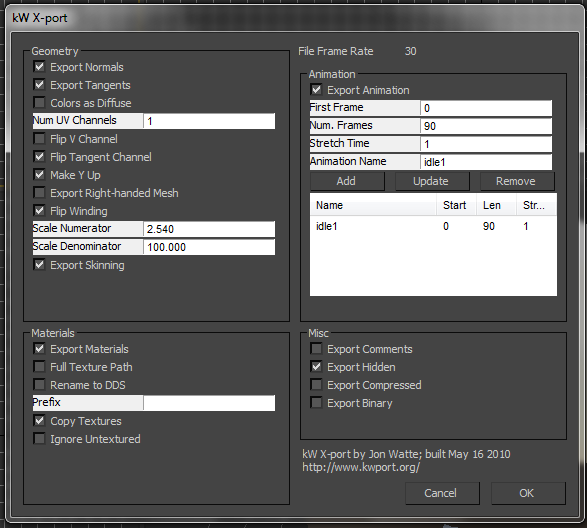

kW X-port for 3ds Max Documentation
This documentation describes the kW X-port exporter plug-in for Autodesk 3ds Max
modeling tool. As of version 1.5, kW X-port supports 3ds Max versions 9, 2008, 2009,
2010 and 2011 in 32-bit and 64-bit version. Note that the same IGame.dll Max library
that kW X-port uses was too buggy in 3ds Max version 8 or below to reasonably support
those versions, hence version 9 is the lowest supported version.
Features
kW X-port is written to support the needs of those developing 3D games using 3ds Max
and the .X file format. The most common example of .X file format usage comes from the
Microsoft XNA Game Studio tool set, although the Microsoft DirectX SDK also contains
code to read and use .X mesh files. kW X-port supports almost every feature that is
supported in general .X file importers, except for rarely used features such as
progressive meshes.
kW X-port has been developed and tested to the point that it is now a very robust
exporter for animated and static geometry, using Skin or Physique modifiers, Biped or
Bones skeletons, or rigid (hierarchical) animated models. Where most other exporters
will fall down in one way or another, especially when it comes to skinning, kW X-port
generally will do the right thing.
Features of the exporter include:
- The ability to copy textures into the output folder of the export.
- Cutting the 3ds Max timeline into multiple separate animation clips.
- Including or excluding specific geometry based on flags.
- Exporting DirectX Shader Material parameters.
- Multiple texture coordinate sets (up to 4) in a single .X file.
- MaxScript support in the KWFunctions interface.
- And a number of settings and options that can tune the export to suit almost any
export scenario.
New in This Version
See the document CHANGELIST.html.
Installing
If you're reading this on the web, you need to download the installer: www.kwxport.org.
Double-click the downloaded installer msi file. It will look for installed, supported
versions of 3ds Max, and offer you checkboxes for installing them. If you see no
exporter versions offered, then something went wrong -- perhaps you're using a
localized version which is not currently supported? If that is the case, please
contact me on the kW X-port forums.
In this case, you should be given the option to install the plug-in in "stand-alone"
mode in the Program Files folder, and you will have to move it to the proper "plugins"
folder in your copy of 3ds Max yourself.
Installing kW X-port will also install the proper Visual Studio 2008 C Runtime
libraries, and the proper DirectX release runtime.
Configuring
To use kW X-port, prepare your scene (hide or mark non-renderable objects that you
do not want to export, etc), and then select Export... from the file menu.
Click the pop-up menu for file format at the bottom, and scroll to the end, where you will
find kW X-port for .X files. Select that file format, select the output file name, and
press OK. The configuration dialog will now open, which lets you set various parameters
for the export process. Choices you make here depend a lot on what your particular game
requires, and there are no one "right" set of choices for any situation.
For using a mesh with XNA Game Studio, you generally want to turn on "Right-handed mesh"
and "flip winding." When doing this, it means that the mesh will be properly exported for
the right-handed system in the default XNA Game Studio set-up, and you do not need to use
any of the options in the X file importer tool in the Content project in XNA Game Studio.
You likely also want to turn on "Make Y Up" for the same reason.

Options
Geometry Options
- Export Normals
- Include per-vertex normals in the exported data. This may duplicate vertices to support hardware.
- Export Tangents
- In addition to normals, also export tangent and bitangent channels.
- Colors as Diffuse
- Export per-vertex colors in the diffuse color channel of the vertex buffer.
- Num UV Channels
- The maximum number of texture coordinate channels to include per vertex. Cannot be higher than 4.
- Flip V Channel
- Has the effect of flipping the texture mapping upside-down.
- Make Y Up
- Export files that draw and animate with Y up (DirectX default) rather than Z up (Max default).
- Export Right-handed Mesh
- Export a mesh that is not mirrored when used in a right-handed coordinate system, such as XNA Game Studio.
- Flip Winding
- Adjust the triangle winding to be counter-clockwise in right-handed space. This is default in Direct3D.
- Scale Numerator
- Scale up Max System Units by this much before exporting positions to vertex buffer.
- Scale Denominator
- Scale down Max System Units by this much before exporting positions to vertex buffer.
- Export Skinning
- Include Physique and/or Skin modifier skinning data in vertex buffer (blend weights and indices).
Note: If System Units is inches, and you want meters out, set Scale Numerator to 2.54 and set
Scale Denominator to 100. (1 / 40 is very close to the same, but not exactly). If the System Unit
is inches, and you want feet out, set the numerator to 1, and the denominator to 12. If the System
unit is centimeters, and you want meters out, set numerator to 1, and denominator to 100.
Materials Options
- Export Materials
- Include material information with the exported geometry. You generally want this turned on, unless
you export only invisible "collision" geometry, for example.
- Full Texture Path
- Include the full path to the texture file in the material description. This means the texture will
be easily found by any program on your machine, but the file may not work well if transfered to another
machine.
- Rename to DDS
- When writing texture names, change the extension of the texture file name to "dds" in the material.
This does not actually convert the texture data; you'll have to do that yourself.
- Prefix
- If not using full texture paths, then prepend this string to the name of the texture file names
written into the file. For example, if this is "textures/" and the texture is named "green.jpg" and
"rename to DDS" is turned on, the texture name written to file will be "textures/green.dds".
- Copy Textures
- If checked, will copy the textures used by the mesh materials to the same folder as the mesh
is exported to. Generally, you do not use Full Texture Path in this case, and do not use a Prefix.
- Ignore Untextured
- If some geometry is not textured, then do not include it in the output. This can be a helpful way
to avoid exporting helper objects used for animation, etc.
Any material using the DirectX Material in the Max viewport will be exported as a
DirectX Effect reference, with the same parameters as configured in the Max Material library.
Misc Options
- Export Comments
- Include some extra information about the file and the geometry in the file in the .X file. This
information is mostly usable for programmers reading the files.
- Export Hidden
- Even if a geometry/node has been hidden in Max, include it in the export. Otherwise, hidden
geometry is not included. Also, geometry that has the "Renderable" checkbox set to false in the
node properties in max will not be exported, unless this flag is set.
- Export Compressed
- Compress the output file using the DirectX library file compression. Generally combined with
binary file format to make the smallest possible files.
- Export Binary
- Write the output as binary .X format, rather than text .X format. Generally combined with the
compress option to generate the smallest possible files.
Animation Options
- Export Animation
- Include animation on the Max timeline in the file export data. You need to define animation
clips for the animation to actually be included.
- First Frame
- The first frame (number) of a clip within the timeline that you are defining.
- Num. Frames
- The number of frames (length) of a clip within the timeline that you are defining.
- Stretch Time
- Scale the duration of an animation clip that you are defining. 2.0 means twice as long.
- Animation Name
- The name to give the animation clip you are defining.
- Add
- Take the first frame, num frames, stretch and name parameters from above, and append them as
a clip to the list of clips to export.
- Update
- Update the selected clip in the list of clips with the information in the above fields.
- Remove
- Remove the selected clip from the list of clips to export.
- List
- This list shows the named animation clips that you have defined, as sub-ranges of the timeline.
This allows you to mark one part of the timeline as Idle, one as Walk, etc. Click on an entry to
edit it (change the field values, and press Update), or delete it (press Remove).
MaxScript API
The settings and file operations of kW X-port are fully scriptable through MaxScript!
When the kW X-port plug-in is loaded, the "kwfunctions" interface will contain functions to
get and set setting names and values, and to add, update and remove animation clips. You can
see the full list of functions by executing
showinterface("kwfunctions")
in the MaxScript Listener window. The installer also puts a MaxScript file called kwutils.ms
in the same folder as this documentation, which implements a simple utility that lets you
save the configuration of the current exporter settings to a file, load configuration files
into the current scene (preserving the animation clips in the current scene, or overwriting
the animation clip definitions with the data in the file), and export the scene.
Recommendations
When using kW X-port, various features become more important than others. Here
are some suggestions that have come from users of kW X-port, that may simplify your
life.
Using a Script to Export
The best workflow for exporting is generally to define a number of Max scripts that
export a scene in a given, consistent way. For example, you may have one script for
exporting static geometry; another script for exporting skinned characters; and yet
another script for exporting animations. After writing those scripts, you can tie
them to widgets on the Max toolbar, so that exporting correctly is as simple as
clicking an icon. The new ability to load/save exporter settings to text files in
MaxScript can greatly help with this, as it allows such a MaxScript to simply load
the appropriate settings, and then calling the export function.
Animation Clips are Stored in User Data
The animation clip information is stored in the user properties of the document, as
a string called "allAnimations." This means that you could edit the animations by
editing this string, as well as editing any other property stored in the document
user properties. However, that may cause the MaxScript interface to lose sync with
the settings (as it keeps a cached copy of the settings), so the best way to change
settings, if you don't want to use the settings dialog, is to use the MaxScript API.
Frequently Asked Questions
- Can I export vertex morph animations using kW X-port?
- Generally, no. The .X file format does not support morph animation.
- Can you support 3ds Max version 8/7/5/3 ?
-
- No. Not only do I not have access to those versions of 3ds Max; they are also very
old, and most importantly, the IGame.dll library for versions older than 9 is too buggy
to be useful for kW X-port.
- When I export a skinned mesh, it comes out looking like a box, or otherwise all wrong.
- There is still a bug in the IGame.dll library part of 3ds Max, which makes it so that
you have to collapse the modifier stack before export. The only two modifiers on the stack
should be Editable Mesh at the bottom, and Physique or Skin on top of that. If there are other
modifiers, the exported data will be wrong. There is not much I can do about this, other than
keep bugging Autodesk to fix this (the bug report is on the fourth year and counting, though).
- Does kW X-port support lights?
- No, the .X file format does not support lighs, so kW X-port cannot export the
lights from your scene. You can export a dummy with a specific name, and find that in your
game, to serve the purpose of a light.
- Does kW X-port support cameras?
- No, the .X file format does not support cameras, so kW X-port cannot export the cameras
from your scene. You can export a dummy with a specific name, and find that in your game, to
serve the same purpose.
For More Help
There is a help forum, download links, and even source code (Open Source! Yay!) available
at the web site www.kwxport.org. Feel free to post any
questions you might have in the forums, and welcome to the kW X-port community!